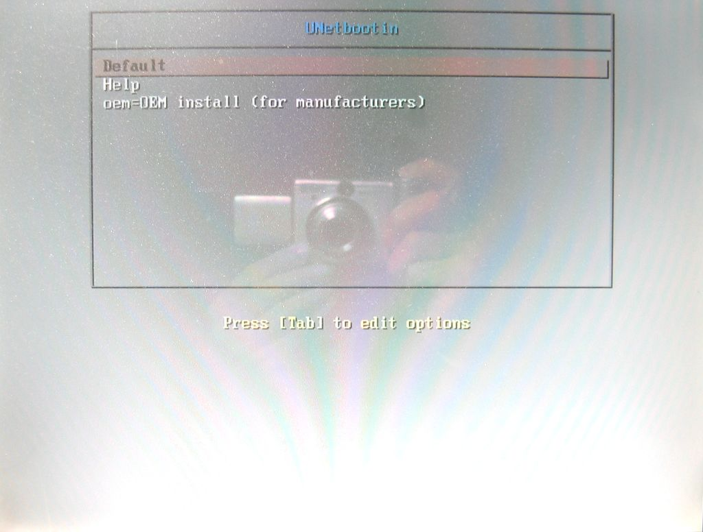

也紀念我們永遠的朋友 李士傑先生（Shih-Chieh Ilya Li）。
要安裝、開機應用還是掃毒救援隨身碟？一個 Unetbootin 全搞定！
以往想要安裝諸如 Ubuntu 等的 Linux 作業系統，最基本的做法不外乎是到該作業系統的官方網站下載 ISO 影像檔，接著用燒錄軟體燒錄到光碟片內，再以光碟開機的方式進行安裝。這樣的方式在大容量隨身碟不普及，且電腦不支援 USB 隨身碟開機的年代，可說是唯一的安裝解決方案，不過以今日的觀點來看，這樣的方式不是很經濟。
畢竟，Linux 的套件不但多樣，而且版本的推陳出新也很快，如果想要嚐試不同套件及其新版本，那將會燒出好多張安裝光碟片。例如 Ubuntu 一年會出兩個版本（通常在四月和十月），如果每個版本都要燒成光碟，那不是很浪費嗎？（安裝好的 Ubuntu 也可以直接透過網路來升級到新的系統，不過有時候部份新增功能會有無法使用的現象，如 Ubuntu 9.10 開始使用 EX4 檔案系統，直接升級就無法讓開機碟更換為該檔案系統；又應用程式若有所變動時，升級後在選單部分有可能會產生錯誤，像 Attila 由 Ubuntu 9.04 直接升級為 9.10 時，影片瀏覽程式就產生此現象）。若是改用可重複使用的隨身碟來製作安裝碟，不是比較經濟環保嗎？（當然也可使用可重複燒錄的光碟片，不過製作所需的時間真的比 USB 隨身碟多太多！）
除此之外，製作可直接應用的開機光碟（Live CD），也是許多人愛用的方式。這樣的方式有許多好處，例如使用只能燒錄一次的光碟片來製作，無論如何都不用怕會被感染惡意程式；其次是可在任何一台支援光碟開機的電腦上使用，不但可省去繁冗的安裝和設定程序，也可把自己習慣使用的系統、應用程式帶著跑，達到隨時隨地都可使用的境界。（當然，部分硬體如網卡等有可能無法驅動使用）
想要製作上述各種應用隨身碟的做法有很多，每個方法繁簡不一，其中最方便的莫過於利用 Unetbootine，尤其是在 Windows 作業系統底下（此點乃直接從官網轉述）。不只如此，Unetbootin 還能製作系統救援、系統工具、掃毒救援等各種隨身碟等，可以說從系統安裝到系統救援等可能用到的各種類型隨身碟都可製作！如此方便的工具，當然值得大家好好認識囉！
＊ Unetbootin 的基本資料：
軟體名稱：Unetbootin
檔案大小：4.5 MB
官方網站：https://unetbootin.sourceforge.net/
下載網址：SourceForge.net UNetbootin
適用軟體平台：Microsoft Windows（2000/XP/Vista/7）, or Linux
授權：GNU General Public License (GPL)
＊使用前的心得分享
要利用 Unetbootin 製作各種形式的開機隨身碟之前，有幾點心得要和大家分享：
1. 使用存取速度較高的隨身碟
製作系統工具、救援和安裝碟，都可以透過網路下載，隨身碟的存取速度並不需要多快，只要高於網路下載的即可（大多數的隨身碟都有這樣的本事）。若是使用下載回來的 ISO 檔來製作安裝碟，最好使用存取速度高的隨身碟。因為 ISO 檔通常比較大，所需的製作時間通常會比較久，要是速度不夠快，豈不是浪費時間？做好之後用來安裝作業系統時，所需的時間也會比較多（和採用光碟片比起來，無論製作和安裝都還是快上許多）。目前高速隨身碟的價格已經下滑，不再是可望而不可及的產品，既然要節省製作和安裝的時間，就一次省多一點吧！
2. 注意隨身碟的容量計算標準
製作各類開機隨身碟的容量並不需要太大，如系統工具、掃毒救援等，只要 128 MB；使用 CD ISO 檔的安裝碟則只要 1 GB 就綽綽有餘。若想要使用 DVD 的 ISO 檔來製作安裝碟，那麼就得使用 8 GB 以上的隨身碟。為何不用 4 GB 就好？這是因為隨身碟廠商用來計算容量所採用的標準是 1 GB 1000MB，不是採用電腦科學的標準（1 GB = 1024 MB），二者之間的計算基礎不同，所提供的空間和所需的空間會有些微差異，製作安裝碟時就會因容量不足而失敗！（在此特別感謝孟逵兄及時提供高速 8 GB 隨身碟，得以完成相關測試！）
圖 1：產品標明為 8 GB 的隨身碟，在作業系統內所顯示的只有 7.44 GB。其中的差異，正是容量計算標準不一的結果。
3. 要先確定待安裝的電腦支援 USB 隨身碟開機
目前的電腦大多已經支援 USB 隨身碟開機，但部份較舊的電腦則否，在這些舊機器上使用開機隨身碟前，最好先確認一下該電腦的主機板是否支援 USB 隨身碟開機，免得高高興興的做好開機碟，卻因電腦不支援 USB 隨身碟開機而不能用，這豈不是白忙一場嗎？除此之外，某些主機板使用 4 GB 以上的隨身碟進行開機時，會出現「Boot error」的字樣，無法完成開機的程序，所以想要利用 DVD ISO 檔來製作安裝碟之前，別忘了先確認一下主機板是否能用。（通常主機板的說明手冊是不會有這類訊息，嘗試錯誤似乎是唯一的方式……）
這一些都準備好之後，就可以快快樂樂地使用 Unetbootin 啦！
＊直接下載來源檔製作各類開機碟
Unetbootin 在製作過程中，對於來源檔的取得，不外乎有兩種方式，一是直接利用內建選項的相關網址，自行透過網路下載並製作，其二則是直接使用事先下載至電腦內的 ISO 檔來製作。前者的優點是需要時才下載，不過在製作安裝光碟時，除了少數安裝與開機應用合一的 Linux 發行套件，一般只會製作最精簡的安裝隨身碟，真正安裝時，往往還需要上網下載相關的檔案，而後者正可以彌補這樣的缺點。
二者的做法和過程幾乎完全一模一樣，為求完整，二種方式本文都會加以介紹，現在先來看看透過網路下載的方式吧！（採用此方式時，請別忘了要保持網路暢通喔！）
步驟一：
()
將 Unetbootin 下載回來之後，記得先把隨身碟連接到電腦，並確定隨身碟可正常使用，然後才在程式上面點二下滑鼠，啟動這個程式。
［補充說明］
如果沒有先把隨身碟接上電腦會怎樣呢？不會怎樣，只是 Unetbootin 會找不到隨身碟而已！要是發生這種情形，那只有把 Unetbootin 先關閉，然後再開啟一次 Unetbootin。
步驟二：
這個程式並不需要安裝，會直接開啟主程式介面。首先我們要指定想用的隨身碟。左下角的「Type」預設是「隨身碟」，其右邊的「Drive」會根據 Type 所選的項目，自動顯示相關的磁碟機代號，也就是我們已經接上的隨身碟。
如果在 Type 內選擇「硬碟」，那麼 Drive 內就會把電腦內可用的開機硬碟顯示出來（勾選其上的Show All Drives (use with Care) 則會顯示所有的硬碟及其分割出來的磁碟），所以要是選擇硬碟時要小心，以免影響硬碟內的資料或系統。
［補充說明］
Unetbootin 本身是多國語言版本，會自動根據作業系統的語系而顯示相關的語言。但在 377 之後的版本，部分的介面內容不知為何會顯示為英文。雖然不影響使用，卻讓人有為德不卒的感覺。
話雖如此，Attila 並不建議大家使用 377 版。因為它可選用的發行套件和類型都比較少，相對的實用性自然較差，所以還是建議大家使用新的版本為佳。
步驟三：
預設是使用「Distribution」（發行套件），此一選項就是要採用網路下載的方式來製作各式各樣的隨身碟。
接著在其右邊的欄位內選擇要使用的套件或系統工具、救援工具、掃毒救援軟體等，範例內所選的是 Ubuntu 這個發行套件。
［補充說明］
除了各式各樣的 Liunix 發行套件之外，Unetbootin 也可選擇各種系統工具，如 Parted Magic、SystemRescueCD、Super Grub Disk、Dr.Web Antivirus、F-Secure Rescue CD、Kaspersky Rescue Disk、Backtrack、Ophcrack、NTPasswd、Gujin、Smart Boot Manager (SBM)、FreeDOS等，詳情請見官網(https://unetbootin.sourceforge.net/#features)。
不過在實際使用時，卻發現一些官網沒有列出來的項目，如 Super Ubuntu。至於有何奧妙，就留給大家自行試試看囉！
步驟四：
選定發行套件之後，接著就是選擇該套件的版本。不同套件可用的版本多寡不一，視該套件而定。要注意的是，選擇不同套件的同時，底下會出現有關該套件的簡易介紹和安裝說明，告訴使用者該套件的特色，以及 Unetbootin 對於該套件提供的各種安裝類型和要點為何。
選擇完畢後，按一下［確定］。
［補充說明］
有關安裝的各種類型和要點，發行套件不同，內容也不同。以上述範例來說，當選擇 Ubuntu 的套件之後，主要的安裝類型共有「Live」、「NetInstall」、「HD Media」等三種，Live 就是指開機應用隨身碟（Live CD的隨身碟版），開機後可直接使用，裡面也有安裝選項，需要時可直接啟動來安裝。NetInstall 是允許透過FTP來安裝，可安裝 Kbuntu 等其他衍生版本。至於 HD Media 則是讓使用者可以選用事先下載到硬碟或隨身碟的安裝 ISO 檔。但要注意的是，此安裝 ISO 檔必須存放在硬碟或隨身碟的根目錄底下，例如隨身碟的磁碟機代號為 F:，那麼 ISO 檔就直接存放於其下，也就是說它的路徑如下：
F:\ubuntu-9.10-desktop-i386.iso
不過經過實際測試，存放在隨身碟內的安裝成功率較低（會出現找不到 ISO 檔的現象），而存放在電腦內的 C: 磁碟內，其安裝的成功率是 100 %！其路徑和存放在隨身碟相似：
C:\ubuntu-9.10-desktop-i386.iso
步驟五：
此時該程式會自動連接到官方網站並進行檔案的下載。下載完畢會自動進行相關動作，如提取並複製檔案、安裝 Bootloader 等。此時可以做點別的事，才不會有空等加浪費時間的感覺。
［補充說明］
Ubuntu 的安裝與開機應用是整合在一起的，所以選用 Live 版本時，下載的還是安裝用的 ISO 檔。只是 Unetbootin 預設的下載網址是 Ubuntu 的官網，要是遇到下載熱門時段，那真的是會讓人等到海枯石爛！遇到這種情形時，可以先到比較不塞的 Mirror 站下載 ISO 檔回來，改用後面將要提到的方式來製作，如此會比較省時省力且省網路資源。
另外，如果選用 NetInstall 來製作安裝碟時，實際進行安裝時，可以選擇想要的下載網址。例如語系選擇繁體中文後，就會看到好幾個可用的網址，包括台灣主要的 Mirror 站，如此就可以根據當時網路的狀況來選擇下載的地方，以便加快安裝的速度。
步驟六：
此一畫面出現時，開機應用隨身碟的製作就算大功告成。如果要立刻在該電腦上使用或安裝，那麼可以按［現在重新開機］。要注意的是，重開機之後，要記得先進入 BIOS 內設定好 USB 隨身碟開機選項，否則就無法使用剛製作好的隨身碟來開機。
如只是製作隨身碟來用，則按［退出］結束 Unetbootin 即可。
［補充說明］
BIOS 內的 USB 開機選項，雖然不同廠牌的主機板或筆記型電腦各有所不同，不過大體上都大同小異。一般來說，多數都是先把 USB 隨身碟連接到電腦上（某些主機板和筆電則不需要），然後才開機進入 BIOS 選項內，在選擇開機裝置（Boot Device）內就會看到所連接的 USB 隨身碟。把它設為第一開機順序後並儲存，再重開機時就會以該隨身碟來開機。
＊實際開機使用
隨身碟製作完成了，電腦的 USB 開機選項也設定好了之後，當然要來看看隨身碟如何使用。以 Netbootin 製作完成的隨身碟，使用的方法大致上都差不多，所別者只是選項的多寡和應用內容不同而已。（至於不同性質的隨身碟，其實際使用的操作方式則不在本文的範圍之內）
底下就以前面所完成的開機應用碟為例，簡單看一下相關步驟和畫面。
步驟一：

設定好 USB 開機後重新開機，就會以該隨身碟開機，此時會載入隨身碟內的開機檔案，然後出現 Unetbootin 的選單。選單的內容多寡，和所製作的隨身碟類型有關。
此選單的操作是透過鍵盤，想在項目之間移動，只要按鍵盤上的向下鍵（↓）和向上鍵（↑）即可；選定項目要執行時，就按 Enter 鍵。預設要執行的項目是 Default，這裡要使用的也是這一項，因此直接按 Enter 鍵即可。
步驟二：
經過一連串的檔案載入動作之後，很快就完成 Ubuntu Live CD 的開機，桌面左邊就有install Ubuntu 9.10 的選項，需要安裝時，就可在其上按二下滑鼠。
如果拿光碟開機來比較所需要的時間，使用隨身碟的方式真的快很多！簡直有如雲泥之別！
＊以預先下載回來的 ISO 檔來製作安裝碟
從前面的製作方式，不難發現 Unetbootin 在製作各種隨身碟時，先是把 ISO 檔或相關檔案下載到 Windwos 的暫存檔資料夾內，然後解壓縮後再存入隨身碟內，所以影響製作時間的關鍵，就在於頻寬、網路狀況和隨身碟的儲存速度。
通常發行套件的 ISO 檔，CD 版的容量大約 689 MB；DVD 版則約 3.85 GB，以目前寬頻已經相當普及的情況來說，需要的下載時間不能算長（當然，會因頻寬大小和當時網路狀況而有頗大的差異）。但是官網的下載速度通常會比區域性的 Mirror 站來的低，在 Unetbootin 不能讓使用者自行選擇載點的情況下，自行到下載速度較高的 Mirror 站把 ISO 檔抓回來，製作上還是會比較省一點時間。
況且，自行抓檔案還可使用續傳軟體，今天沒空抓完，明天還可繼續，使用 Unetbootin 可不行喲！
步驟一：
點選「Diskimage」，預設的檔案類型是 ISO（另一個選項則是磁片，也就是說可以從磁片去讀取可用的映象檔）。接著按最右邊的［選擇映象檔］按鈕。
步驟二：
開啟儲存映象檔的資料夾，點選要使用的映象檔後，按一下［開啟］。
步驟三：
選擇好要使用的映象檔後，接下來當然就是按下［確定］囉！
步驟四：
和前面不同的是，第一步驟會跳過（別忘了，來源檔已經在自己的電腦內），Unetbootin 會直接從第二步驟開始進行。此時製作的速度，完全看解壓縮的速度和隨身碟的儲存速度高低而定。（如果使用高速碟，這一步驟大約 3 分鐘以內，比光碟燒錄快上很多！）
步驟五：

製作完成後，如要立刻使用，就按［現在重新開機］（別忘了設定開機順序），如是製作來用於其他電腦，則按［退出］，完成安裝用隨身碟的製作。
以 Unetbootin 來製作各類型的開機隨身碟，如系統工具、開機救援、掃毒救援、開機應用、安裝等，操作方式都相同，步驟也不多，加上它的更新速度相當快，可使用的發行套件相當多，可說是建立各種應用隨身碟的最佳工具。
［補充說明］
Unetbootin 也可允許使用者自行指定 Kernel 和 initrd 檔案的方式，製作自己特定需求的隨身碟。不過想用這樣的方式，對於 Linux 必須有一定的了解才行，加上每個人的需求不同，此處就不加以介紹。
Special


Address：No.128, Sec.2, Academia Rd., Institute of Information Science, Academia Sinica, Nangang District, Taipei City 11529, Taiwan (R.O.C).
Privacy Policy. Terms-of-use

Comments
謝謝你的肯定！
說清楚，講明白，讓有興趣的朋友 少走冤枉路，就是我寫教學文的基 本要求！謝謝你願意推薦啦！
大家的肯定是我繼續寫下去的動力 ！
使用 Unetbootin 開機之後的預設選項，確實不會出 現選擇語系的畫面。不過，Une tbootin 一開機進去會出現一小段文字提示 ，就是按一下 Tab 鍵後，可以修改選單項目。我個人 「猜測」，若是知道怎麼修改選單 項目（進去是文字介面，一堆我自 己也不懂的東西......），應該可以讓這樣的項目出現。 只是我自己對 Linux 的了解非常有限，完全不知道怎麼 修改，所以這完全是我個人的猜測 啦！完全幫不上忙真是抱歉......我很期待其他 Linux 的高手可以幫忙解答！
（我真的是還在摸索 Linux 的門外漢啦！）
......
說真的，你比我還厲害呢！我還不 知道怎麼加參數......Orz
如果你只是針對某台主機或外接硬 碟要進行掃描，我建議可以使用 Unetbootin 製作掃毒專用碟，官方網站提到可 用的有Dr.Web Antivirus, F-Secure Rescue CD, and Kaspersky Rescue Disk 等。只是這些掃毒軟體部分已經不 提供新的版本，有多大效果就有待 實證囉！
另外，有個方法是製作好開機應用 時（如 Ubuntu Live CD），完成開機程序後，可以透 過應用程式的安裝，直接加裝 ClamWin 來使用。只是這個方法在重新開機 後，會因為恢復成Live CD 的初始值而無效，必須再重裝一次 。所以，要透過這個工具來掃毒前 ，請先確定有無合適的新版掃毒軟 體可用，再擇優來用比較妥當。
請問已下載的ISO檔, 又可否用指令完成製作安裝手指( 隨身碟)?
抱歉，我對 Windows 的指令不是很熟，Linux的指 令更不熟，所以不知道該怎麼把下 載的 ISO 檔用指令來完成隨身碟的製作。印 象中，曾經看過其他網友寫過這一 類的文章，甚至詳細說明指令的應 用及優缺點，煩請自行 Google 一下吧！（我習慣的方法都是使用 圖形介面的工具，算是一個對文字 指令有畏懼感的使用者）